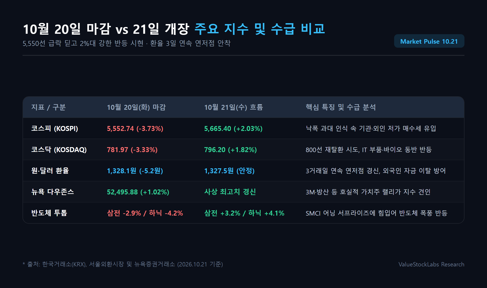
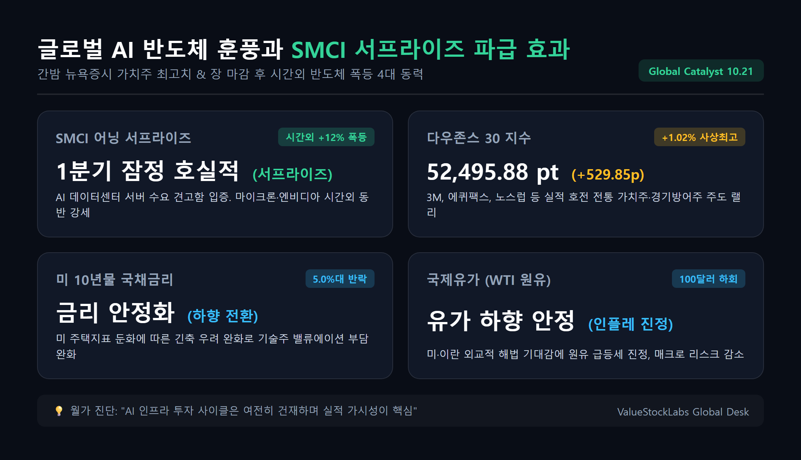
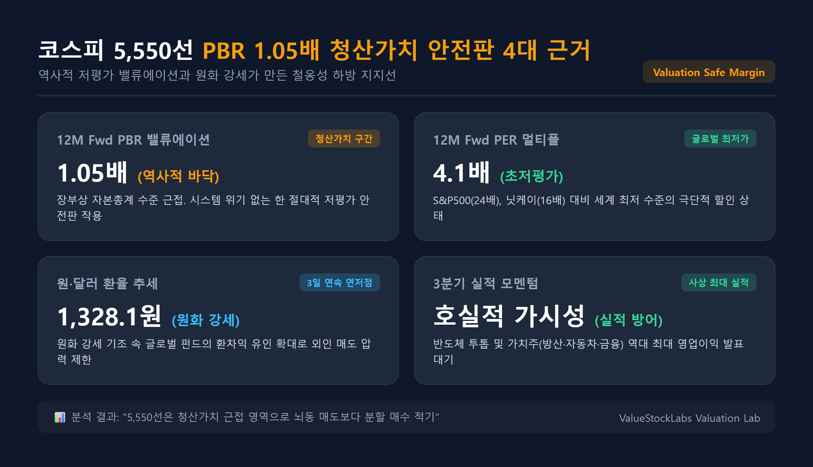
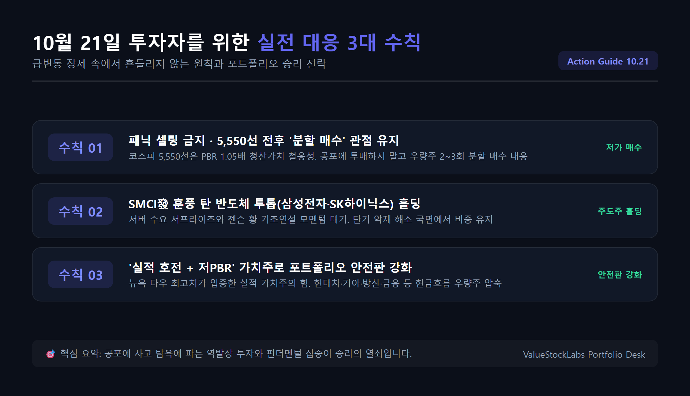

[오늘의 증시 시황] 코스피 5,550선 급락 딛고 5,660선 반등! 다우 최고치와 SMCI 어닝 서프라이즈 속 10월 21일 실전 대응 전략

1. 전일 국내 증시 급락 총평과 21일 장초반 강한 반등의 배경
10월 20일(화) 국내 증시는 대내외 악재가 한꺼번에 겹치며 연중 최대 수준의 변동성을 연출했습니다. 코스피는 전 거래일 대비 무려 -215.27포인트(-3.73%) 급락한 5,552.74로 장을 마감했고, 코스닥 지수 역시 -26.92포인트(-3.33%) 내린 781.97을 기록하며 800선을 내주었습니다.
외국인과 기관이 코스피에서 각각 약 5,333억 원, 1조 48억 원에 달하는 대규모 쌍끌이 순매도를 쏟아내며 시장을 짓눌렀고, 개인 투자자 홀로 약 8,982억 원을 순매수하며 물량을 받아냈습니다. 미국의 10년물 국채금리가 5.1%대로 재차 치솟고, 인텔이 범용 메모리를 탑재한 차세대 AI 가속기를 발표하면서 국내 HBM 밸류체인의 독점적 프리미엄이 훼손될 수 있다는 과도한 불안감이 지수를 단숨에 끌어내렸습니다.
그러나 10월 21일(수) 오늘 아침 개장과 함께 시장 분위기는 180도 달라졌습니다. 코스피는 개장 직후 낙폭 과대에 따른 강력한 기관·외국인 반발 매수세가 유입되며 단숨에 +2% 이상 반등하여 5,660~5,670선을 회복했습니다. 코스닥 역시 795선을 넘어서며 800선 재탈환을 목전에 두고 있습니다.

| 시장 지표 | 10월 20일(화) 마감 | 10월 21일(수) 장초반 흐름 | 핵심 배경 및 시사점 |
|---|---|---|---|
| 코스피 (KOSPI) | 5,552.74 (-3.73%) | 5,665.40 (+2.03% 상승 출발) | 5,550선 바닥 확인 후 기관·외인 저가 매수 유입 |
| 코스닥 (KOSDAQ) | 781.97 (-3.33%) | 796.20 (+1.82% 반등) | 낙폭 과대 제약·바이오 및 IT 부품주 동반 반등 |
| 원·달러 환율 | 1,328.1원 (-5.2원 하락) | 1,327.5원 (안정적 횡보) | 3거래일 연속 연저점 안착, 외국인 이탈 방어 |
| 코스피 수급 구도 | 외인 -5,333억 / 기관 -1조원 | 외국인·기관 순매수 전환 | 패닉 셀링 진정 및 실적주 중심 선별 매수세 |
2. 글로벌 매크로 분석: 다우 52,400 돌파와 SMCI 어닝 서프라이즈
간밤 뉴욕증시는 지수별로 뚜렷한 차별화 장세를 나타냈습니다. 다우존스30 산업평균지수는 3M, 에퀴팩스, 노스럽그러먼 등 전통 제조업과 방산 기업들의 3분기 호실적에 힘입어 +529.85포인트(+1.02%) 급등한 52,495.88로 사상 최고치를 경신했습니다. S&P 500 지수 역시 +0.28% 상승한 7,712.57을 기록했습니다.
반면, 기술주 중심의 나스닥 지수는 정규장에서 26,424.82(-0.02%)로 차익 실현 매물에 밀려 약보합세를 보였습니다. 하지만 진짜 반전은 정규장 마감 직후 일어났습니다.
AI 데이터센터 서버의 핵심 공급사인 슈퍼마이크로컴퓨터(SMCI)가 월가의 컨센서스를 대폭 뛰어넘는 1분기 잠정 실적을 공시하면서 시간외 거래에서 주가가 폭등한 것입니다. 이에 따라 마이크론, 엔비디아, 브로드컴 등 미국 핵심 반도체주들이 시간외 거래에서 일제히 3~5%대 급등세를 연출하며, 전일 국내 반도체 시장을 공포로 몰아넣었던 'AI 인프라 투자 피크아웃 우려'를 일거에 잠재웠습니다.

더불어 매크로 환경도 한층 우호적으로 전환되었습니다:
- 국제유가 안정: WTI 원유 선물이 배럴당 100달러 선 밑으로 반락하며 인플레이션 우려를 완화했습니다.
- 국채금리 반락: 미국 주택지표 둔화 속에 10년물 국채금리가 5.0%대로 내려앉아 성장주에 가해지던 밸류에이션 압박이 크게 누그러졌습니다.
- 원·달러 환율 연저점: 서울 외환시장에서 달러당 원화 환율이 1,328.1원으로 3일 연속 연저점을 경신하며 원화 강세 기조가 확고해졌습니다.
3. 주도 섹터 팩트체크: 반도체 투톱(삼성전자·SK하이닉스)과 저PBR 가치주
전일 시장 하락을 주도했던 종목들이 오늘 장에서는 가장 탄력적인 상승 동력으로 변모하고 있습니다.
(1) 삼성전자 (전일 211,500원 ➔ 금일 장초반 +3.2% 반등)
전일 인텔의 범용 메모리 탑재 차세대 AI 가속기 발표 소식으로 외국인 매도가 쏟아지며 211,500원(-2.98%)까지 밀렸던 삼성전자는 오늘 장초반 21만 8,000원 선을 회복했습니다. 시장 전문가들은 인텔의 차세대 칩 도입이 단기적으로 HBM 공급망 다변화 이슈를 만들 수는 있으나, 엔비디아 루빈(Rubin) 및 차세대 AI 플랫폼의 HBM4 독점 납품 퀄 테스트 통과 기대감과 파운드리 수주 모멘텀을 훼손할 수 없다고 평가합니다.
(2) SK하이닉스 (전일 1,223,000원 ➔ 금일 장초반 +4.1% 폭풍 반등)
SK하이닉스는 미국 손자회사 솔리다임(Solidigm)의 나스닥 상장 추진 소식에 따른 중복상장 논란으로 20일 -4.23% 급락했습니다. 그러나 솔리다임의 나스닥 IPO는 지분 희석 우려보다 대규모 자금 조달을 통한 QLC 기반 초고용량 eSSD(기업용 SSD) 시장 지배력 확대라는 펀더멘털적 이점이 훨씬 크다는 재평가가 나오며 127만 원 선을 단숨에 회복했습니다. 3분기 사상 최대 분기 영업이익 발표를 앞두고 밸류에이션 매력이 극대화된 상태입니다.
(3) 저PBR 가치주 (방산, 자동차, 금융)
미국 뉴욕증시에서 다우 지수가 1% 넘게 급등한 배경에는 탄탄한 실적을 갖춘 가치주들의 활약이 있었습니다. 국내 시장에서도 현대차(PER 4.8배), 기아, KB금융, 한화에어로스페이스 등 밸류업 프로그램 수혜와 역대급 실적이 보장된 가치주들이 지수 하방을 든든하게 받쳐주고 있습니다.
4. 코스피 밸류에이션 점검: PBR 1.05배의 강력한 청산가치 안전판
주식 시장에서 단기 급락이 찾아왔을 때 우리가 가장 먼저 확인해야 할 것은 펀더멘털과 밸류에이션의 하방 경직성입니다.

현재 코스피 지수 5,550선은 다음과 같은 강력한 안전마진을 보유하고 있습니다:
- 12M Fwd PBR 1.05배: 대한민국 코스피 상장사들의 자본총계(청산가치)에 육박하는 극단적 저평가 구간입니다. 2008년 금융위기나 2020년 팬데믹 등 시스템 위기가 아닌 이상, PBR 1.0배선은 항상 장기 저점 역할을 해왔습니다.
- 12M Fwd PER 4.1배: 글로벌 주요국 증시(S&P500 24배, 닛케이 16배, 대만 18배)와 비교했을 때 세계 최저 수준의 멀티플을 기록하고 있어 밸류에이션 매력이 독보적입니다.
- 환율 1,328원선의 환차익 유인: 원화 강세가 이어질 때 외국인은 주가 상승 이익뿐 아니라 환차익까지 거둘 수 있으므로, 단기 매도 이후 장기 펀드의 리밸런싱 매수세 유입이 필연적입니다.
5. 10월 21일 투자자를 위한 실전 대응 3대 수칙
급등락이 반복되는 시장에서 패닉에 빠져 뇌동매매를 하는 것은 손실을 확정 짓는 지름길입니다. 오늘 장에서 투자자가 반드시 지켜야 할 3대 수칙을 제시합니다.

코스피 5,550선은 청산가치에 근접한 철옹성 지지선입니다. 어제와 같은 단기 투매 장세에서 공포에 질려 주식을 던지는 대신, 실적 가시성이 높은 핵심 주도주를 2~3회에 걸쳐 분할 매수하는 역발상 전략이 유효합니다.
시간외 SMCI 어닝 서프라이즈와 오늘 밤 예정된 엔비디아 젠슨 황 CEO의 기조연설은 AI 반도체 투자 사이클이 여전히 강력함을 입증할 핵심 모멘텀입니다. 단기 노이즈에 흔들리지 말고 포트폴리오의 반도체 비중을 안정적으로 유지하십시오.
다우 지수의 사상 최고치 경신이 증명하듯, 매크로 변동성 장세의 최후 승자는 실적과 현금흐름이 확실한 기업입니다. 자동차(현대차·기아), 조선, 방산, 금융지주 등 차입금 부담이 없고 주주환원율이 높은 저PBR 우량주를 바벨 전략의 한 축으로 구축하시길 권장합니다.
본 콘텐츠는 신뢰할 수 있는 공개 금융 데이터 및 증권가 리서치를 바탕으로 정보 제공을 목적으로 작성되었으며, 특정 종목에 대한 매수·매도 추천이나 확정 수익을 보장하는 투자 권유가 아닙니다. 시장 상황은 실시간으로 변동될 수 있으며 모든 투자의 최종 판단과 결과에 대한 법적 책임은 투자자 본인에게 있습니다.